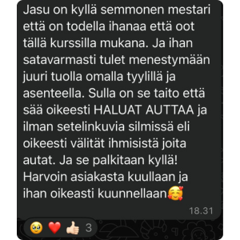
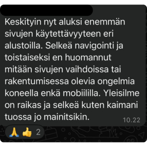
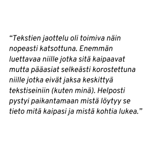
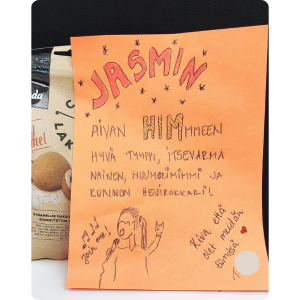

Lupaukseni sinulle
Katson maailmaa kaikki neurotyypit huomioivasta näkökulmasta ja työskentelyni päätavoite on vahvistaa esteettömyyttä kaikkialla ympäristöissämme. Kaiken tekemiseni ytimessä on yhdenvertaisuuden parantaminen. Se ruokkii motivaatiotani myös sateisina päivinä.
Apuna pienille ja isoille
Olen tottunut palvelemaan erilaisia asiakkaita yksityishenkilöistä yhteisöihin ja pienyrityksistä pörssiyhtiöihin. Työni on aina laadukasta asiakkaan koosta riippumatta. Tulkkaan byrokratiaa ja lakitekstiä sujuvasti. Perustelen ehdotukseni ja päätökseni kattavasti. Omaan erinomaiset tiedonhakutaidot ja opin mielelläni uutta.
Luovaa ongelmanratkaisua
Perusteellisuuteni ja kykyni ymmärtää byrokratiaa toimivat edukseni erilaisissa asiakasprojekteissa. Järjestelmällisyyteni ja kykyni luoda toimivia systeemejä ovat erityisiä vahvuusalueitani. Kiitosta olen saanut erityisesti ongelmanratkaisukyvystäni nopeasti muuttuvissa tilanteissa.
Selkeää kommunikointia
Kykyni poimia asiakkaan ydintarve ja ymmärtää kommunikoinnin erilaisuutta auttavat minua onnistumaan työssäni. Olen saanut kiitosta kyvystäni antaa selkeitä ohjeita. Kommunikoin selkeästi ja rauhallisesti myös haastavissa asiakastilanteissa.
Oikeudenmukaisuutta ja inhimillisyyttä
Olen luonteeltani suunnitteluun panostava ratkaisija ja toimeenpanija. Nautin järjestyksen luomisesta ja yksintyöskentelystä osana monimuotoista tiimiä. Tärkeimmät arvoni ovat oikeudenmukaisuus ja inhimillisyys.
